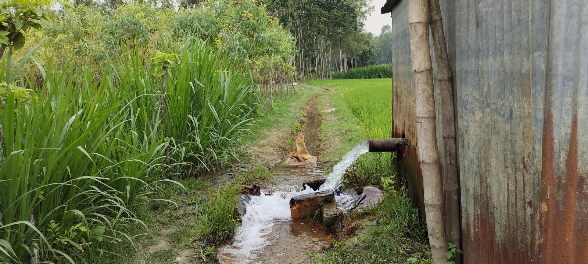

Hoosier Dirt & Gravel installs, replaces, and resizes culverts for rural properties across central Indiana. Most culvert problems trace back to one of two issues: the wrong size was put in years ago, or the original install didn't include proper pitch and backfill. When a culvert fails, the driveway above it usually goes next.
A failed culvert at the wrong time costs more than a new install. These are the situations we see most across central Indiana.
A good culvert install is about more than dropping a pipe in a trench. The size, the pitch, and the backfill all determine whether the install holds through years of weather or fails after the first big storm.
Calculate the right pipe size based on watershed and runoff volume
Set proper pitch for water flow without erosion at the outlet
Backfill in layers with the right material for long-term stability
You don't always see the culvert problem before it becomes a driveway problem. These are the early signs to watch for.


Get a free on-site estimate for culvert installation, replacement, or resizing across central Indiana. We'll check the existing setup, calculate the right size, and quote the work.